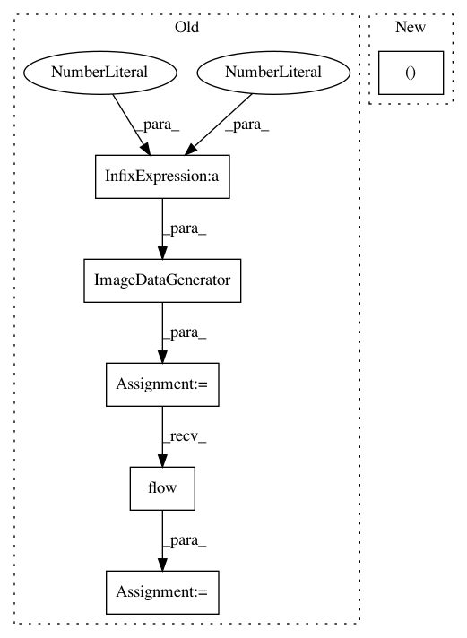

bbbdbcc1bda5260269cfa60beab33ea654ffd768,snntoolbox/io_utils/cifar10_load.py,,get_cifar10,#Any#Any#Any#,22
Before Change
// Y_train = to_categorical(y_train, nb_classes)
Y_test = to_categorical(y_test, nb_classes)
datagen = ImageDataGenerator(rescale=1./255, featurewise_center=gcn,
featurewise_std_normalization=gcn,
zca_whitening=zca)
datagen.fit(X_test/255.)
dataflow = datagen.flow(X_test, Y_test, batch_size=len(X_test))
X_test, Y_test = dataflow.next()
if flat:
X_train = X_train.reshape(X_train.shape[0], np.prod(X_train.shape[1:]))
X_test = X_test.reshape(X_test.shape[0], np.prod(X_test.shape[1:]))
After Change
// np.savez_compressed(filepath+"Y_train", Y_train)
np.savez_compressed(filepath+"Y_test", Y_test)
return (X_train, Y_train, X_test, Y_test)
In pattern: SUPERPATTERN
Frequency: 3
Non-data size: 6
Instances
Project Name: NeuromorphicProcessorProject/snn_toolbox
Commit Name: bbbdbcc1bda5260269cfa60beab33ea654ffd768
Time: 2016-08-27
Author: iulialexandra@ini.uzh.ch
File Name: snntoolbox/io_utils/cifar10_load.py
Class Name:
Method Name: get_cifar10
Project Name: NeuromorphicProcessorProject/snn_toolbox
Commit Name: e6475ab4e069bd71d9f79f515d371c80b5699b88
Time: 2019-07-11
Author: bodo.rueckauer@intel.com
File Name: scripts/ann_architectures/mnist/cnn_loihi.py
Class Name:
Method Name:
Project Name: NeuromorphicProcessorProject/snn_toolbox
Commit Name: 85e2c1959f14c7e1ff053cdcbc94f7e34487cea1
Time: 2019-04-16
Author: bodo.rueckauer@intel.com
File Name: scripts/ann_architectures/mnist/cnn_loihi.py
Class Name:
Method Name: